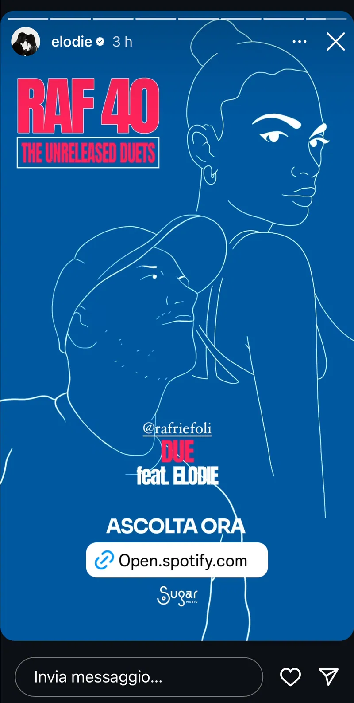
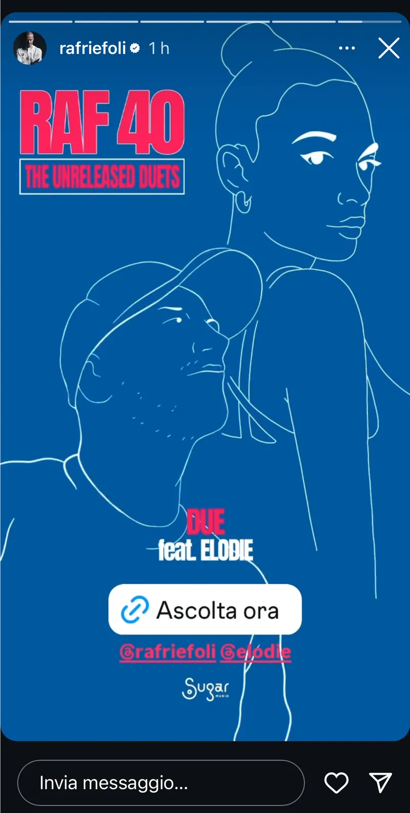
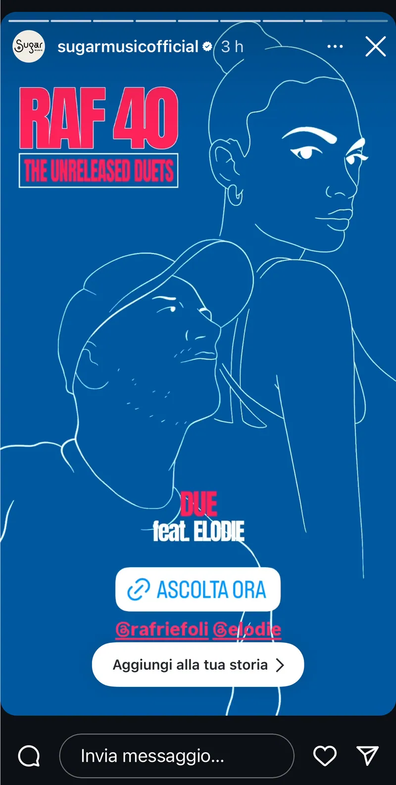

Torna ai lavori
Artwork & social — Sugar Music
RAF 40 The Unreleased Duets
Per i 40 anni di carriera di Raf, Sugar Music pubblica The Unreleased Duets: sei brani storici riletti in chiave contemporanea insieme a Elodie, Giuliano Sangiorgi, Levante, J-Ax e Bassi Maestro.
Ho tradotto l'idea del duetto in ritratti frame by frame: una linea bianca continua su fondo blu, con Raf sempre presente accanto a ogni ospite.

Tracklist
Sei duetti, sei ritratti
Ogni brano ha la sua story animata: Raf e l'ospite del duetto si disegnano nella stessa linea, con titolo e "Ascolta ora" per il lancio sui social.
Scegli una traccia o lascia scorrere la tracklist.





Ascolta il disco
RAF 40 – The Unreleased Duets è uscito il 4 dicembre 2024 per Sugar Music, su tutte le piattaforme digitali.